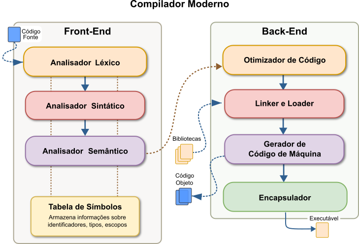

14 Tabela de Símbolos em Compiladores Modernos
Está sem tempo? Leia o Expresso.
A Tabela de Símbolos é um tipo de dados abstrato que mapeia identificadores, chamados de símbolos, para a sua informação semântica associada. Essa é a principal estrutura de dados utilizada por um compilador, ou interpretador, para rastrear as entidades declaradas em um código fonte. A função primária da Tabela de Símbolos é registar a informação sobre cada identificador em um programa, atuando como um dicionário para o processo de tradução.
É importante distinguir entre um identificador e um símbolo. Um identificador é uma cadeia de caracteres, um lexema, como por exemplo x. Um símbolo, por outro lado, é um nome único dentro de um contexto específico. Um único identificador pode representar múltiplos símbolos distintos, dependendo do seu escopo ou da sua classe. Por exemplo, na linguagem FORTRAN, o identificador X pode representar três nomes distintos: o nome de um bloco comum, um elemento dentro desse bloco e uma variável em uma definição de função, como pode ser visto na Figura Figure 14.1. Em linguagens com estrutura de blocos, o mesmo identificador pode ser declarado em escopos aninhados, representando diferentes símbolos. Esta distinção é fundamental para o propósito da Tabela de Símbolos: resolver a qual entidade um determinado uso de um identificador se refere.
A Tabela de Símbolos é preenchida de forma incremental. A informação sobre os vários artefatos do programa (classes, variáveis, métodos, etc.) e as suas propriedades (tipos, argumentos, visibilidade, etc.) é recolhida e refinada ao longo das várias fases da compilação. As associações entre nomes e aos artefatos que eles denotam são estabelecidas com base na estrutura sintática do programa, conforme determinado pelo analisador sintático e as fases subsequentes do processo de tradução.
14.1 Um pouco de História: A Evolução da Tabela de Símbolos
A Tabela de Símbolos, embora conceitualmente simples, passou por uma notável evolução ao longo da história da computação. Sua trajetória reflete diretamente o avanço na complexidade das linguagens de programação, as mudanças nas arquiteturas de hardware e a busca contínua por compiladores mais rápidos e eficientes. A Figura Figure 14.2 sintetiza a história evolutiva das Tabelas de Símbolos. Sem medo de errar muito, podemos dizer que tudo começou com o Fortran.
O primeiro compilador FORTRAN (1957) marcou o nascimento da compilação como a conhecemos hoje. As necessidades do compilador Fortran eram relativamente simples: mapear identificadores, nomes de variáveis, sub-rotinas, para seus atributos, tipo, endereço de memória. Para isso, foram utilizadas estruturas de dados lineares, como arrays ou listas. A busca por um símbolo era feita sequencialmente, varrendo a estrutura do início ao fim. Para os programas da época, essa abordagem de complexidade linear, \(O(n)\), era suficiente. Sob o olhar do desenvolvedor moderno pode parecer ineficiente e demasiado inocente, mas estabeleceu o princípio fundamental: associar um nome a um conjunto de metadados.
O próximo passo importante acontece com a introdução do ALGOL 60 (1960). O ALGOL 60 introduziu um conceito transformador: a estrutura de blocos (begin…end), que permitia o aninhamento de escopos. Uma variável declarada dentro de um bloco só era visível ali dentro e em seus sub-blocos. Uma Tabela de Símbolos linear e global mostrou-se inadequada. É muito difícil e pouco eficiente criar estruturas aninhadas em uma tabela linear. A solução foi o desenvolvimento de Tabelas de Símbolos hierárquicas ou aninháveis. Ao percorrer um novo escopo, o compilador cria uma nova tabela, ou se preferir, um novo nível, de forma aninhada. Deste ponto em diante, a busca por um símbolo passou a percorrer uma pilha, do escopo mais interno para o mais externo, modelando perfeitamente as regras de visibilidade de símbolos do ALGOL. Para programas pequenos com escopos rasos, essa abordagem ainda era viável, mas a busca continuava sendo linear em cada nível.
À medida que os programas se tornaram maiores e mais complexos, o desempenho da busca linear nas tabelas de símbolos transformou-se em um gargalo de performance consumindo tempo significativo. A solução veio com a adoção massiva das tabelas de dispersão ou hash tables. Oferecendo um tempo de busca médio de complexidade \(O(1)\), estas estruturas de dados representaram um degrau evolutivo em eficiência criando um novo patamar de expectativas. Muito rapidamente a capacidade de encontrar as informações de um identificador com complexidade \(O(1)\), independentemente do tamanho do programa, tornou-se a abordagem padrão. Neste ponto, éramos felizes e sabíamos.
Na década de 1970 linguagens como Pascal e C popularizaram a compilação em múltiplas passagens, na qual o código-fonte é processado em várias etapas (análise léxica, sintática, semântica, otimização, geração de código). Isso exigiu que a Tabela de Símbolos persistisse entre as passagens. Neste ponto da história a Tabela de Símbolos deixou de ser uma estrutura de dados temporária da análise sintática para se tornar um repositório central de informações semânticas, consultado e enriquecido ao longo de todo o processo de compilação. Isso foi fundamental para habilitar recursos como declarações antecipadas forward declarations e otimizações mais complexas.
Praticamente 20 anos se passaram até a década de 1990 quando a popularização de linguagens orientadas a objetos como C++ e Java introduziu uma nova camada de complexidade. As tabelas de símbolos precisaram evoluir para gerenciar:
- Hierarquias de herança: mapear a relação entre classes base e derivadas;
- Sobrecarga de métodos: Distinguir entre múltiplos métodos com o mesmo nome, mas assinaturas diferentes;
- Resolução de métodos virtuais: lidar com a vinculação dinâmica (late binding) em tempo de execução; As tabelas de símbolos se tornaram mais estruturadas, frequentemente integradas a outras representações, como árvores de classes, para modelar essas relações complexas.
Na mesma proporção em que o tempo passa, a evolução tecnológica não para. Chegamos aos anos 2000, a era moderna dos compiladores. Esta era é marcada pela explosão na escala dos projetos de software e pela onipresença de processadores multi-core. O foco se voltou para otimizações de baixo nível e gerenciamento de memória, resultando em inovações como:
- Alocação em arena: em vez de alocar memória para cada símbolo individualmente, grandes blocos de memória, as arenas, são alocados de uma vez. Símbolos são então “esculpidos” nesses blocos com um simples incremento de ponteiro. Isso acelera drasticamente a alocação e permite que toda a memória da compilação seja liberada de uma só vez, eliminando a sobrecarga de desalocações individuais.
- Internalização de strings, String Interning: garante que cada string de identificador idêntico exista apenas uma vez na memória. Todas as ocorrências de
minhaVariavel, por exemplo, apontam para a mesma instância de string. Isso reduz o consumo de memória e permite comparações de strings ultrarrápidas através da simples comparação de ponteiros com complexidade \(O(1)\).
- Design Consciente de Cache, Cache-Conscious Design: os engenheiros de compiladores começaram a projetar estruturas de dados que minimizam falhas de cache, os cache misses. Técnicas como o armazenamento co-localizado de strings, como pode ser visto no LLVM, em que o nome do símbolo é armazenado junto com seus metadados na mesma alocação de memória, melhoram a localidade de dados e, consequentemente, o desempenho.
14.2 Interação com as Fases do Compilador: Uma Perspetiva de Ciclo de Vida
A Tabela de Símbolos é uma estrutura de dados dinâmica que evolui ao longo do processo de compilação, servindo como interface entre o frontend, módulos de análise, e o backend, módulos de síntese, do processo de tradução. Seja este processo a compilação, a interpretação ou qualquer outro método misto. O estado de completude da Tabela de Símbolos reflete o progresso do processo de tradução em questão. Assim, teremos:
Análise Léxica: esta é a primeira fase do processo de tradução. É a fase que encontra os identificadores. Pode realizar a inserção inicial na Tabela de Símbolos, muitas vezes armazenando apenas o lexema. Palavras-chave, operadores e identificadores predefinidos são tipicamente pré-carregados na tabela durante a inicialização do compilador.
Análise Sintática e Semântica: nestas duas fases, a Tabela de Símbolos é mais intensamente utilizada e enriquecida. A análise sintática fornece o contexto, por exemplo, uma declaração de variável, para que o analisador semântico adicione atributos detalhados como tipo, escopo e requisitos de memória. A análise semântica depende da Tabela de Símbolos para realizar verificações essenciais, como a compatibilidade de tipos, a resolução de escopo e a detecção de variáveis não declaradas ou declaradas múltiplas vezes no mesmo escopo. Historicamente será o analisador semântico o módulo de tradução responsável pelo preenchimento da maior parte da Tabela de Símbolos. Apenas durante a análise semântica é possível conhecer informação suficiente para descrever um nome de forma correta e completa.
Geração de Código Intermédio e Final: as fases de backend consomem a informação armazenada na Tabela de Símbolos para gerar código de máquina eficiente. Utilizam especificamente os endereços de memória, os deslocamentos, offsets, dentro dos registos de ativação e os tamanhos dos tipos para alocar armazenamento e gerar as diretivas de montagem apropriadas.
O design da estrutura de dados da Tabela de Símbolos deve, portanto, acomodar este preenchimento incremental e os padrões de acesso variados de cada fase. Uma operação de inserção ineficiente retardaria o frontend do compilador (analisadores léxico, sintático e semântico), enquanto uma operação de pesquisa, lookup, lenta constituiria um estrangulamento tanto para o frontend como para o backend.
A Figura Figure 14.3 mostra a relação típica de uma Tabela de Símbolos ao longo das várias fases do processo de tradução.

14.3 Informação Armazenada: Os Atributos de um Identificador
Uma entrada na Tabela de Símbolos é uma coleção de atributos associados a um símbolo. Os atributos exatos dependem da linguagem, mas tipicamente incluem os seguintes campos:
- Nome: o lexema ou a representação em cadeia de caracteres do identificador (ex:
x,for,1).
- Tipo: o tipo de dados do símbolo (por exemplo,
int,float,struct, ponteiro para função). Esta informação é utilizada para a verificação de tipos.
- Classe/Tipo (Kind): a natureza do símbolo, que pode ser uma variável, constante, procedimento, parâmetro, rótulo, tipo, campo de registo, entre outros.
- Escopo (Scope): o bloco lexical ou o espaço de nomes, namespace no qual o símbolo é válido. A gestão do escopo é frequentemente uma função da própria estrutura da Tabela de Símbolos.
- Informação de Memória: o endereço de tempo de execução, o deslocamento dentro de um registo de ativação ou a classe de armazenamento (por exemplo, estático, automático).
- Para Funções/Procedimentos: o número e os tipos dos parâmetros, bem como o tipo de retorno.
- Para Matrizes (Arrays): as dimensões e os limites de cada dimensão.
- Outros Atributos: informação adicional, como visibilidade (público, privado), se uma variável é constante, ou referências cruzadas para as linhas nas quais o símbolo é declarado e utilizado.
14.4 Estruturas de Dados Fundamentais para a Implementação da Tabela de Símbolos
Nesta secção a curiosa leitora encontrará um estudo das principais estruturas de dados utilizadas para construção e gestão da Tabela de Símbolos, estabelecendo por que certas escolhas são dominantes na prática moderna. Originalmente, as Tabelas de Símbolos foram implementadas usando listas ligadas simples ou vetores não ordenados. Estas abordagens são fáceis de entender e implementar, mas não escalam bem com o aumento do número de símbolos.
As listas ligadas e os vetores não ordenados representam as implementações mais simples para uma Tabela de Símbolos. Contudo, sua simplicidade vem atrelada a um alto custo computacional. Ambas as estruturas exigem uma pesquisa linear para localizar um símbolo, o que resulta em uma complexidade de tempo de \(O(n)\) no pior caso e no caso médio. Para o grande número de símbolos encontrados em programas modernos, nos quais as operações de busca são extremamente frequentes, essa complexidade as torna ineficientes.
O uso de vetores ordenados pode representar uma melhoria considerável na complexidade da pesquisa. Manter os símbolos em ordem alfabética, por exemplo, permite a utilização de algoritmos de pesquisa binária, que possuem uma complexidade de tempo típica de \(O(\log n)\). Isso representa um ganho de desempenho substancial para as operações de busca em comparação com a abordagem linear. Contudo, neste caso, o problema é transferido para as operações de inserção e exclusão. Para manter a ordem do vetor, a inserção de um novo símbolo pode exigir o deslocamento de uma grande porção dos elementos existentes para abrir espaço, uma operação com complexidade \(O(n)\). Da mesma forma, a remoção de um símbolo pode necessitar que os elementos subsequentes sejam deslocados para preencher a lacuna. Portanto, embora a pesquisa seja otimizada, as operações de inserção e exclusão tornam-se um gargalo significativo, especialmente em cenários onde a Tabela de Símbolos é frequentemente modificada.
14.4.1 hash tables (Hash Tables): O Padrão De Fato
A esmagadora preferência por hash tables na implementação de tabelas de símbolos é uma consequência direta da carga de trabalho típica de um processo de tradução. As pesquisas por símbolos são muito mais frequentes do que as suas inserções. Um símbolo é declarado apenas uma vez, o que corresponde a uma única inserção, mas pode ser referenciado centenas ou milhares de vezes, resultando em múltiplas operações de pesquisa. Portanto, otimizar o tempo médio de pesquisa, que possui complexidade \(O(1)\) para hash tables, proporciona o maior benefício de desempenho geral. Esta assimetria na frequência das operações torna a pesquisa de caso médio \(O(1)\) de uma hash table o fator decisivo para sua escolha, mesmo que seu desempenho no pior caso seja \(O(n)\), o que ainda é linear, e que a estrutura não possua as características de ordenação inerentes a uma árvore de pesquisa binária.
O conceito central de uma hash table é mapear chaves, neste caso os nomes dos símbolos, para índices em um vetor. Esses índices, chamados de buckets ou slots, são determinados por meio de uma função de dispersão, conhecida como hash function.
O design da função de dispersão é o aspecto fundamental para o projeto de uma hash table com bom desempenho. O objetivo principal é distribuir os símbolos de maneira uniforme pelos buckets para minimizar a ocorrência de colisões, que podem acontecer quando duas chaves diferentes geram o mesmo índice. Uma função de dispersão, hash, simples poderia envolver a soma dos valores ASCII dos caracteres de uma string e, em seguida, a aplicação do operador módulo com o tamanho da tabela para obter um índice. No entanto, na prática, são utilizadas funções mais sofisticadas para garantir uma distribuição mais homogênea e evitar agrupamentos. Mesmo com uma boa função de dispersão, as colisões são inevitáveis. Por isso, uma estratégia eficaz de resolução de colisões é essencial.
Existem duas abordagens comuns para lidar com o problema das colisões em hash tables usadas no processo de tradução. A primeira, conhecida como encadeamento, chaining ou closed addressing, consiste em fazer com que cada bucket da tabela aponte para uma lista ligada contendo todos os símbolos que foram mapeados para aquele mesmo índice. Esta é uma abordagem comum e robusta. Porém a atenta leitora deve observar que nesta solução, a performance degrada de forma gradual com o aumento do número de elementos em colisão devido a complexidade de busca na lista ligada em cada bucket, uma lista ligada tem complexidade \(O(n)\) nos casos médio e pior e \(O(1)\) no melhor caso.
A segunda abordagem é o endereçamento aberto, open addressing ou open hashing. Nesta técnica, se um bucket já estiver ocupado, o algoritmo procura o próximo espaço disponível dentro da própria tabela para inserir o novo elemento. Existem métodos diferentes para encontrar o próximo bucket livre, incluindo a sondagem linear, que verifica sequencialmente os índices (i + 1, i + 2, …), e a sondagem quadrática, que verifica os índices (i + 1², i + 2², …), ajudando a mitigar problemas de agrupamento primário que podem ocorrer com a sondagem linear.
O problema de agrupamento primário, ou primary clustering, é um fenômeno negativo que ocorre especificamente com o método de sondagem linear em hash tables que usam endereçamento aberto. Em termos simples, ele pode ser descrito da seguinte forma:
Causa: na sondagem linear, quando uma colisão ocorre em um índice
i, o algoritmo procura o próximo bucket livre verificando sequencialmente os índicesi + 1,i + 2,i + 3, e assim por diante.Efeito: essa abordagem sequencial faz com que chaves que colidem na mesma região da tabela comecem a formar aglomerados ou clusters, longas sequências de buckets ocupados um após o outro.
Problema: uma vez que um aglomerado se forma, ele tende a crescer cada vez mais rápido. Qualquer nova chave que seja mapeada para qualquer posição dentro desse aglomerado terá que percorrer o aglomerado inteiro até encontrar um espaço vazio no final, aumentando ainda mais o seu tamanho.
O resultado é que o desempenho da hash table se degrada significativamente. Em vez de se aproximar da complexidade de busca de \(O(1)\) (tempo constante), o tempo de busca começa a se parecer com o de uma busca linear (\(O(n)\)), pois o algoritmo gasta muito tempo percorrendo esses longos aglomerados.
A sondagem quadrática ajuda a mitigar esse problema porque, em vez de verificar o próximo espaço sequencial (+1, +2, …), essa solução cria saltos pela tabela de forma não sequencial (+1², +2², …), o que ajuda a espalhar os elementos e a evitar a formação desses aglomerados contíguos.
14.4.2 Estruturas Baseadas em Árvores: A Alternativa Ordenada
As estruturas baseadas em árvores representam a principal alternativa ordenada às hash tables na implementação das Tabelas de Símbolos. O conceito central por trás desta abordagem é o uso dos algoritmos de árvores de pesquisa binária, de Binary Search Tree, BST autobalanceadas, como as árvores AVL ou as árvores Vermelho-Preto, Red-Black Trees, que mantêm os símbolos em uma ordem lexicográfica constante. Esta propriedade de ordenação é a sua vantagem mais significativa em relação às hash tables.
A propriedade chave que define uma BST garante que, para qualquer vértice, todas as chaves em sua subárvore esquerda são menores que a chave do próprio vértice, e todas as chaves em sua subárvore direita são maiores. Em uma BST simples, inserções sequenciais poderiam levar à degeneração da árvore, fazendo-a se comportar como uma lista ligada com desempenho \(O(n)\). Para evitar isso, os algoritmos de autobalanceamento, como os das árvores AVL e Vermelho-Preto, realizam rotações para assegurar que a altura da árvore permaneça logarítmica (\(O(\log n)\)) em relação ao número de vértices, garantindo assim a eficiência das operações.
Essa ordenação inerente aos algoritmos das árvores AVL e Vermelho-Preto, permite a implementação eficiente de funcionalidades com as quais as hash tables têm grande dificuldade. Por exemplo, é possível realizar um percurso ordenado para listar todos os símbolos em ordem alfabética de forma trivial. Além disso, operações como encontrar o símbolo sucessor ou predecessor de um dado símbolo e realizar consultas de intervalo, como encontrar todos os símbolos entre inicio e fim, por exemplo, podem ser executadas de maneira computacionalmente eficiente, capacidades que não são suportadas nativamente por uma hash table padrão.
14.4.3 Uma Análise Comparativa de Desempenho, Memória e Funcionalidade
Ao comparar as duas estruturas aparentemente viáveis que vimos até o momento, hash tables e árvores de pesquisa binária, é essencial que a atenta leitora analise as contrapartidas relacionadas ao uso de memória e ao desempenho do hardware, como a localidade de cache. Em termos de sobrecarga de memória, memory overhead, as hash tables exigem a pré-alocação de um vetor de tamanho fixo. Se o número de símbolos for muito inferior a esse tamanho, resultando em um baixo fator de carga, uma quantidade significativa de memória pode ser desperdiçada. Além disso, a estratégia de encadeamento para resolução de colisões adiciona a sobrecarga de um ponteiro para cada entrada na tabela. Em contrapartida, as BSTs autobalanceadas tipicamente possuem uma sobrecarga por elemento maior, pois cada vértice precisa armazenar, no mínimo, dois ponteiros para os filhos e, frequentemente, informações adicionais para o balanceamento, como a cor em árvores Vermelho-Preto. No entanto, sua alocação de memória é dinâmica, vértice a vértice, o que evita o desperdício de um grande bloco de memória pré-alocado e não utilizado.
A localidade de cache é outro diferenciador de desempenho importante. As hash tables que utilizam endereçamento aberto, especialmente com sondagem linear, podem exibir uma excelente localidade de cache. Isso ocorre porque as sondagens para resolver colisões são sequenciais na memória, aumentando a probabilidade de que os dados necessários já estejam na mesma linha de cache. Por outro lado, estruturas baseadas em ponteiros, como hash tables com encadeamento e todas as BSTs, frequentemente sofrem de má localidade de cache. Percorrer uma lista ligada ou os ramos de uma árvore envolve seguir ponteiros que podem apontar para endereços de memória distantes e dispersos. Esse processo, conhecido como pointer chasing, leva a uma maior taxa de falhas de cache, cache misses, o que pode impactar negativamente o desempenho.
Do ponto de vista funcional, existem diferenças claras. As BSTs suportam naturalmente o percurso ordenado dos símbolos; por exemplo, um percurso in-order percorre os vértices em ordem alfabética, o que é útil para gerar listagens ordenadas em saídas de depuração ou para implementar certas características de linguagem. Essa não é uma operação natural ou eficiente para hash tables. Da mesma forma, as BSTs se destacam em consultas de intervalo e proximidade, como encontrar a chave mais próxima de um valor ou todas as chaves dentro de um determinado intervalo, funcionalidades que não são suportadas de forma eficiente por hash tables.
Finalmente, a complexidade de implementação é um fator prático a ser considerado. Embora implementações de bibliotecas padrão para ambas as estruturas estejam prontamente disponíveis, construir uma hash table personalizada e de alta qualidade — o que envolve projetar uma boa função de dispersão e uma estratégia de redimensionamento eficiente — pode ser uma tarefa complexa. No entanto, as BSTs autobalanceadas são notoriamente mais difíceis de implementar corretamente do zero, devido à complexidade dos algoritmos de rotação e manutenção das propriedades de balanceamento. A Tabela ?tbl-comp1 resume as principais características comparativas dessas estruturas de dados.
| Característica | hash tables (Encadeamento) | hash tables (End. Aberto) | BST Balanceada | Vetor Ordenado |
|---|---|---|---|---|
| Pesquisa (Média) | \(O(1)\) | \(O(1)\) | \(O(logn)\) | \(O(logn)\) |
| Pesquisa (Pior Caso) | \(O(n)\) | \(O(n)\) | \(O(logn)\) | \(O(logn)\) |
| Inserção (Média) | \(O(1)\) | \(O(1)\) | \(O(logn)\) | \(O(n)\) |
| Inserção (Pior Caso) | \(O(n)\) | \(O(n)\) | \(O(logn)\) | \(O(n)\) |
| Sobrecarga de Memória | Moderada (ponteiros + vetor) | Baixa a Alta (depende do fator de carga) | Alta (ponteiros por vértice) | Baixa |
| Localidade de Cache | Fraca | Boa (sondagem linear) | Fraca | Excelente |
| Suporte a Percurso Ordenado | Não | Não | Sim (eficiente) | Sim (trivial) |
| Complexidade de Implementação | Moderada | Moderada a Alta | Alta | Baixa |
14.5 Implementação Avançada: O Desafio dos escopos Lexicais
Desde o ALGOL 60, com seus blocos de código, que as linguagens de programação modernas suportam escopos lexicais aninhados. Isto significa que uma variável declarada dentro de um bloco só é visível dentro desse bloco e em seus sub-blocos. A gestão eficaz destes escopos aninhados é um desafio fundamental na implementação de uma Tabela de Símbolos. A estrutura de dados selecionada para a Tabela de Símbolos deve não apenas armazenar os símbolos, mas também refletir a hierarquia dos escopos para garantir que as regras de visibilidade sejam corretamente aplicadas durante o processo de tradução.
14.5.1 O Modelo de Pilha de Tabelas
Esta abordagem, amplamente utilizada por sua simplicidade e intuição, gerencia escopos mantendo uma pilha de Tabelas de Símbolos, que são tipicamente implementadas como hash tables. O mecanismo espelha diretamente a estrutura de escopos aninhados de uma linguagem de programação. Quando um novo escopo é introduzido no código-fonte, como o corpo de uma função, um laço ou um bloco condicional, uma nova hash table vazia é empurrada (pushed) para o topo da pilha, representando o escopo atual. Ao final desse escopo, a tabela correspondente é simplesmente retirada (popped) da pilha e descartada, restaurando o escopo anterior.
As operações são diretas e eficientes. A inserção de um novo símbolo ocorre sempre na tabela que está no topo da pilha, ou seja, no escopo local. A pesquisa por um símbolo começa na tabela do topo e, caso o símbolo não seja encontrado, prossegue para as tabelas abaixo na pilha, uma a uma, em direção à base. A primeira correspondência encontrada é retornada. Este método de busca implementa naturalmente a regra de ocultação (shadowing), na qual as declarações em escopos internos têm precedência sobre as de escopos externos. Como pode ser visto na Figura Figure 14.4.
14.5.2 Algoritmo: Implementando Escopos com uma Pilha de Dicionários
A lógica para gerenciar uma Tabela de Símbolos com escopo pode ser formalizada por meio de um pseudocódigo simples. Assumimos que nossa estrutura é uma pilha de tabelas, na qual cada tabela mapeia nomes a atributos.
// Estrutura de dados global
pilha_de_escopos = [] // Inicia com uma tabela para o escopo global
PROCEDIMENTO enter_scope():
nova_tabela = criar_tabela_vazia()
pilha_de_escopos.push(nova_tabela)
PROCEDIMENTO exit_scope():
SE tamanho(pilha_de_escopos) > 1 ENTÃO
pilha_de_escopos.pop()
SENÃO
erro("Não é possível sair do escopo global")
PROCEDIMENTO declare(nome, atributos):
tabela_atual = pilha_de_escopos.top()
SE nome JÁ EXISTE em tabela_atual ENTÃO
erro("Símbolo já declarado neste escopo")
SENÃO
inserir(nome, atributos) em tabela_atual
FUNÇÃO lookup(nome):
PARA cada tabela em pilha_de_escopos (do topo para a base):
SE nome EXISTE em tabela ENTÃO
RETORNAR atributos_de(nome) em tabela
// Se o loop terminar, o nome não foi encontrado
RETORNAR nulo // Ou lançar erro de "símbolo não declarado"14.5.3 Implementação em Python: Uma Tabela de Símbolos Funcional
Como exemplo simples, podemos traduzir diretamente o pseudocódigo para uma classe Python funcional. Usaremos uma lista de dicionários para representar a pilha de escopos.
import pprint
class Symbol:
def __init__(self, name, category, type):
self.name = name
self.category = category
self.type = type
def __repr__(self):
return f"<Symbol(name='{self.name}', category='{self.category}', type='{self.type}')>"
class SymbolTable:
"""
Uma **Tabela de Símbolos** que gerencia escopos aninhados usando uma pilha.
"""
def __init__(self):
# A pilha de escopos, onde cada escopo é um dicionário (tabela de _hash_).
# Começa com o escopo global.
self.scoped_tables = [{}]
def enter_scope(self):
""" Inicia um novo escopo empilhando um novo dicionário. """
print("--- Entrando em um novo escopo ---")
self.scoped_tables.append({})
def exit_scope(self):
""" Finaliza o escopo atual desempilhando seu dicionário. """
print("--- Saindo do escopo atual ---")
if len(self.scoped_tables) > 1:
self.scoped_tables.pop()
else:
# Idealmente, isso seria um erro do compilador
print("Aviso: Tentativa de sair do escopo global.")
def declare(self, symbol):
""" Declara um símbolo no escopo atual. """
current_scope = self.scoped_tables[-1]
if symbol.name in current_scope:
raise NameError(f"Erro: Símbolo '{symbol.name}' já declarado no escopo atual.")
current_scope[symbol.name] = symbol
print(f"Declarado: {symbol}")
def lookup(self, name):
""" Procura por um símbolo do escopo mais interno para o mais externo. """
print(f"Buscando por '{name}'...")
# Iterar de trás para frente na lista (do topo para a base da pilha)
for scope in reversed(self.scoped_tables):
if name in scope:
symbol = scope[name]
print(f"Encontrado: {symbol}")
return symbol
raise NameError(f"Erro: Símbolo '{name}' não foi declarado.")
def display(self):
""" Exibe o estado atual da **Tabela de Símbolos**. """
print("\n=== Estado da **Tabela de Símbolos** ===")
for i, scope in reversed(list(enumerate(self.scoped_tables))):
print(f"--- Escopo Nível {i} ---")
pprint.pprint(scope)
print("==================================\n")
# Exemplo de uso
if __name__ == "__main__":
st = SymbolTable()
st.display()
# Declarando no escopo global
st.declare(Symbol("g", "variavel", "int"))
st.declare(Symbol("PI", "constante", "float"))
st.display()
# Entrando em um novo escopo (ex.: uma função)
st.enter_scope()
st.declare(Symbol("x", "parametro", "int"))
st.declare(Symbol("g", "variavel", "float")) # Ocultando (shadowing) o 'g' global
st.display()
# Buscando símbolos
st.lookup("x") # Encontra 'x' local
st.lookup("g") # Encontra 'g' local (float), não o global
st.lookup("PI") # Não encontra local, busca no global e encontra
# Entrando em um escopo aninhado (ex.: um bloco if)
st.enter_scope()
st.declare(Symbol("y", "variavel", "bool"))
st.display()
st.lookup("y")
st.lookup("x") # Encontra no escopo da função
# Saindo dos escopos
st.exit_scope()
st.display()
try:
st.lookup("y") # Deve falhar, 'y' estava no escopo interno
except NameError as e:
print(e)
st.exit_scope()
st.display()
st.lookup("g") # Agora encontra o 'g' global (int)Uma implementação deste mesmo modelo, em C++23 pode ser vista no bloco de código a seguir:
/**
* @file SymbolTable.h
* @author Frank Alcantara
* @date 26 de Setembro de 2025
* @brief Implementação de uma **Tabela de Símbolos** com escopo em **C++**23.
*
* @copyright Copyright (c) 2025
*
* Este arquivo contém uma implementação didática de uma **Tabela de Símbolos**
* com escopo, baseada no modelo clássico "pilha de tabelas" popularizado
* em cursos de compiladores como o de Stanford (CS143). O objetivo é
* demonstrar de forma clara como o aninhamento de escopos e o sombreamento
* de variáveis (variable shadowing) podem ser gerenciados.
*/
#include <iostream>
#include <stack>
#include <string>
#include <unordered_map>
#include <optional>
#include <string_view>
/**
* @class SymbolTable
* @brief Gerencia símbolos e seus tipos em escopos aninhados.
*
* A classe SymbolTable implementa o modelo de "pilha de tabelas de símbolos".
* Cada escopo léxico (ex: corpo de uma função, um bloco 'if', um laço 'for')
* é representado por uma tabela de hash (std::unordered_map) separada.
* Uma pilha (std::stack) é usada para gerenciar essas tabelas, refletindo
* a natureza aninhada dos escopos no código-fonte.
*
* A tabela no topo da pilha sempre representa o escopo mais interno, ou seja,
* o escopo atual.
*/
class SymbolTable {
public:
/**
* @brief Construtor da **Tabela de Símbolos**.
*
* Ao ser instanciada, a **Tabela de Símbolos** cria automaticamente o primeiro
* escopo, que representa o escopo global do programa. Todas as declarações
* feitas antes de qualquer outro escopo aninhado residirão aqui.
*/
SymbolTable() {
// Empurra a primeira tabela na pilha para representar o escopo global.
enterScope();
}
/**
* @brief Inicia um novo escopo aninhado.
*
* Esta função deve ser chamada sempre que o analisador do compilador
* encontra o início de um novo bloco léxico (ex: o caractere '{').
* Ela empurra uma nova tabela de hash vazia para o topo da pilha, que
* se torna o escopo ativo para novas declarações de símbolos.
*/
void enterScope() {
std::cout << "[SYSTEM] Entrando em um novo escopo...\n";
m_scopes.push({}); // Empurra um map (hash table) vazio na pilha.
}
/**
* @brief Finaliza o escopo atual.
*
* Esta função deve ser chamada quando o analisador encontra o fim de um
* bloco léxico (ex: o caractere '}'). Ela remove (dá 'pop') a tabela de
* hash do topo da pilha. Com isso, todos os símbolos declarados nesse
* escopo são efetivamente destruídos e se tornam inacessíveis,
* implementando corretamente as regras de escopo da maioria das linguagens.
* Protege contra a remoção do escopo global.
*/
void exitScope() {
if (m_scopes.size() > 1) {
std::cout << "[SYSTEM] Saindo do escopo atual...\n";
m_scopes.pop();
} else {
std::cout << "[SYSTEM] Aviso: Tentativa de sair do escopo global. Ação ignorada.\n";
}
}
/**
* @brief Adiciona um novo símbolo ao escopo atual.
* @param name O nome do símbolo (identificador).
* @param type O tipo associado ao símbolo (ex: "int", "string").
* @return true se o símbolo foi adicionado com sucesso.
* @return false se um símbolo com o mesmo nome já existe no escopo ATUAL.
*
* A inserção ocorre exclusivamente na tabela do topo da pilha, ou seja,
* no escopo mais interno. A função verifica se já existe uma declaração
* com o mesmo nome NESTE escopo para evitar redeclarações.
*/
bool addSymbol(const std::string& name, const std::string& type) {
// Acessa a tabela do topo (escopo atual) sem removê-la.
auto& current_scope = m_scopes.top();
// O método 'contains' (**C++**20) é uma forma eficiente de verificar a existência da chave.
if (current_scope.contains(name)) {
std::cout << "[ERROR] Símbolo '" << name << "' já declarado neste escopo.\n";
return false;
}
current_scope[name] = type;
std::cout << "[ADD] Adicionado símbolo '" << name << "' com tipo '" << type << "' ao escopo atual.\n";
return true;
}
/**
* @brief Procura por um símbolo a partir do escopo atual para o mais externo.
* @param name O nome do símbolo a ser procurado.
* @return std::optional<std::string> contendo o tipo do símbolo se encontrado.
* @return std::nullopt se o símbolo não for encontrado em nenhum escopo visível.
*
* Esta é a operação mais importante para a análise semântica. A busca
* começa na tabela do topo da pilha (escopo mais interno) e, se o símbolo
* não for encontrado, a busca continua na tabela imediatamente abaixo, e
* assim por diante, até a base da pilha (escopo global).
*
* Este mecanismo de busca implementa naturalmente o **sombreamento de variáveis**
* (variable shadowing): a primeira ocorrência do símbolo encontrada (a mais interna)
* "esconde" quaisquer outras com o mesmo nome em escopos mais externos.
*
* O uso de `std::optional` (**C++**17) é a forma moderna e segura de retornar um
* valor que pode ou não existir, evitando o uso de ponteiros nulos ou
* valores mágicos (como uma string vazia).
*/
std::optional<std::string> lookupSymbol(const std::string& name) const {
// Para percorrer a pilha sem destruí-la (pois o método é const),
// criamos uma cópia. Para uma implementação de compilador real,
// uma estrutura de dados com iteradores (como std::vector) seria
// mais performática, mas std::stack é conceitualmente mais clara
// para este exemplo didático.
std::stack<std::unordered_map<std::string, std::string>> temp_stack = m_scopes;
int scope_level = temp_stack.size();
while (!temp_stack.empty()) {
auto& scope = temp_stack.top();
auto it = scope.find(name); // Procura na hash table do escopo atual
if (it != scope.end()) {
// Símbolo encontrado!
std::cout << "[LOOKUP] Símbolo '" << name << "' encontrado no nível de escopo " << scope_level << ".\n";
return it->second; // Retorna o tipo (o valor no map)
}
temp_stack.pop(); // Não encontrou, vá para o escopo pai (abaixo na pilha)
scope_level--;
}
// Se o loop terminar, o símbolo não foi encontrado em nenhum escopo.
std::cout << "[LOOKUP] Símbolo '" << name << "' não encontrado em nenhum escopo visível.\n";
return std::nullopt;
}
private:
/// @brief A pilha de tabelas de hash que gerencia os escopos.
std::stack<std::unordered_map<std::string, std::string>> m_scopes;
};
/**
* @brief Função principal para demonstrar o uso da SymbolTable.
*
* O código a seguir simula o processo de um compilador analisando
* um código com escopos aninhados.
*/
int main() {
SymbolTable table; // Escopo global é criado automaticamente.
std::cout << "\n--- DECLARAÇÕES NO ESCOPO GLOBAL ---\n";
table.addSymbol("g_var", "int");
table.addSymbol("PI", "const double");
// { // Entrando no escopo de uma função, por exemplo.
table.enterScope();
std::cout << "\n--- DECLARAÇÕES NO ESCOPO DA FUNÇÃO 'main' ---\n";
table.addSymbol("x", "string");
// Tenta sombrear a variável global 'g_var'
table.addSymbol("g_var", "char*");
std::cout << "\n--- BUSCAS DENTRO DA FUNÇÃO 'main' ---\n";
// Deve encontrar a versão 'char*' de 'g_var' (sombreamento)
if (auto type = table.lookupSymbol("g_var")) {
std::cout << " -> Tipo de 'g_var' é: " << *type << "\n";
}
// Deve encontrar 'x' como 'string'
if (auto type = table.lookupSymbol("x")) {
std::cout << " -> Tipo de 'x' é: " << *type << "\n";
}
// Deve encontrar a variável global 'PI'
if (auto type = table.lookupSymbol("PI")) {
std::cout << " -> Tipo de 'PI' é: " << *type << "\n";
}
// { // Entrando em um bloco 'if' interno
table.enterScope();
std::cout << "\n--- DECLARAÇÕES NO BLOCO 'IF' INTERNO ---\n";
table.addSymbol("y", "bool");
// Tenta sombrear 'x' do escopo da função
table.addSymbol("x", "float");
std::cout << "\n--- BUSCAS DENTRO DO BLOCO 'IF' INTERNO ---\n";
// Deve encontrar 'x' como 'float' (sombreamento mais interno)
if (auto type = table.lookupSymbol("x")) {
std::cout << " -> Tipo de 'x' é: " << *type << "\n";
}
// Deve encontrar 'y'
if (auto type = table.lookupSymbol("y")) {
std::cout << " -> Tipo de 'y' é: " << *type << "\n";
}
// Tentando buscar um símbolo que não existe
table.lookupSymbol("z");
// } // Saindo do bloco 'if'
table.exitScope();
std::cout << "\n--- APÓS SAIR DO BLOCO 'IF', DE VOLTA À FUNÇÃO 'main' ---\n";
// Agora 'x' deve voltar a ser 'string'
if (auto type = table.lookupSymbol("x")) {
std::cout << " -> Tipo de 'x' agora é: " << *type << "\n";
}
// 'y' não deve mais existir
std::cout << " -> Buscando por 'y' que não deve mais existir...\n";
table.lookupSymbol("y");
// } // Saindo da função 'main'
table.exitScope();
std::cout << "\n--- APÓS SAIR DA FUNÇÃO 'main', DE VOLTA AO ESCOPO GLOBAL ---\n";
// 'g_var' deve voltar a ser 'int'
if (auto type = table.lookupSymbol("g_var")) {
std::cout << " -> Tipo de 'g_var' agora é: " << *type << "\n";
}
// 'x' não deve mais existir
std::cout << " -> Buscando por 'x' que não deve mais existir...\n";
table.lookupSymbol("x");
return 0;
}No código C++23 acima, a classe SymbolTable encapsula toda a funcionalidade necessária para gerenciar escopos aninhados usando uma pilha de tabelas de símbolos. Cada tabela é implementada como um std::unordered_map, que oferece acesso eficiente aos símbolos por meio de hashing. O uso de std::optional para o método lookupSymbol permite um tratamento elegante dos casos em que um símbolo não é encontrado.
14.5.4 O Modelo de Tabela Única com Encadeamento de Escopo
Este modelo adota uma abordagem diferente, utilizando uma única hash table global para armazenar todos os símbolos de todos os escopos. Para gerenciar os diferentes escopos, as entradas para um mesmo identificador são encadeadas em uma lista ligada dentro do bucket correspondente. Geralmente, essa lista é ordenada do escopo mais interno para o mais externo, de modo que a declaração mais recente esteja no início da lista.
As operações neste modelo são mais complexas. Para entrar em um escopo, um marcador especial, que não é um símbolo válido da linguagem, é empurrado para uma pilha de escopos auxiliar, simplesmente para registrar a fronteira do novo escopo. A inserção de um símbolo envolve adicionar uma nova entrada ao início da lista ligada no bucket apropriado, ligando-a a quaisquer entradas pré-existentes para esse mesmo nome. A pesquisa começa com a função de dispersão, que localiza o início da lista ligada para o identificador. Em seguida, essa lista é percorrida para encontrar a primeira entrada válida que corresponda ao escopo atual ou a um escopo envolvente. A principal desvantagem surge ao sair de um escopo. É necessário identificar e remover da hash table todos os símbolos que foram inseridos desde que o último marcador de escopo foi empurrado. Este processo de limpeza é consideravelmente mais complexo e menos eficiente do que a simples operação de pop do modelo de pilha.
14.5.5 Representações de Escopo Hierárquicas e Baseadas em Árvores
Nesta abordagem, a estrutura aninhada dos escopos de um programa é representada explicitamente como uma árvore, frequentemente chamada de “árvore de escopos”. O escopo global atua como o vértice raiz da árvore, e os blocos de código aninhados (funções, classes, laços, etc.) são representados como vértices filhos. Cada vértice nesta árvore contém sua própria Tabela de Símbolos local, que pode ser uma hash table, uma árvore de pesquisa binária ou outra estrutura de dados.
As operações de busca refletem a estrutura da árvore. A pesquisa por um identificador começa na Tabela de Símbolos do vértice correspondente ao escopo atual, que pode ser um vértice folha ou um vértice interno. Se o símbolo não for encontrado localmente, a busca continua na Tabela de Símbolos do vértice pai, depois no avô, e assim por diante, subindo pela árvore até a raiz (o escopo global). Esse percurso ascendente do vértice atual até a raiz espelha funcionalmente a busca descendente no modelo de pilha de tabelas, mas o faz dentro de uma estrutura de dados explícita e persistente, que pode ser mais flexível para certas análises do compilador. A Tabela ?tbl-comp2 resume as principais características comparativas dessas estratégias de gestão de escopos.
| Estratégia | Complexidade Enter Scope | Complexidade Exit Scope | Complexidade Lookup | Gestão de Memória | Complexidade de Implementação |
|---|---|---|---|---|---|
| Pilha de Tabelas | O(1) | O(1) | O(D) (D = profundidade do escopo) | Simples (tabelas inteiras são alocadas/desalocadas) | Baixa a Moderada |
| Tabela Única com Encadeamento | O(1) | O(k) (k = símbolos no escopo) | O(L) (L = comprimento da cadeia) | Complexa (requer limpeza seletiva) | Moderada a Alta |
| Árvore de escopos Explícita | O(logS) ou O(1) (S = n.º de escopos) | O(1) | O(D) | Moderada (vértices da árvore + tabelas) | Alta |